CODING AGENTS AS PIXEL WORLD MODELS
traex/GPT-6.1-Sol · 0114
点击播放 · 原生 RGB 像素
逐轮保存的候选
回放视频、检查图与代码变化。
每份候选均可单独播放。实际图片检查记录在下方工具轨迹中。
候选 01播放与检查图
点击播放 · 原生 RGB 像素
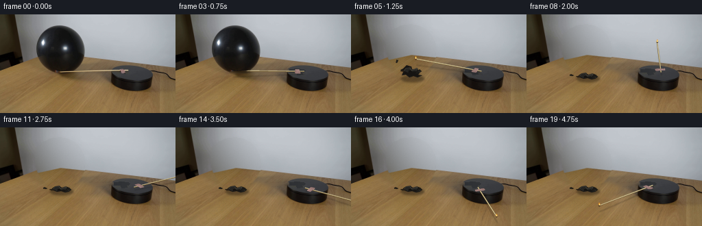
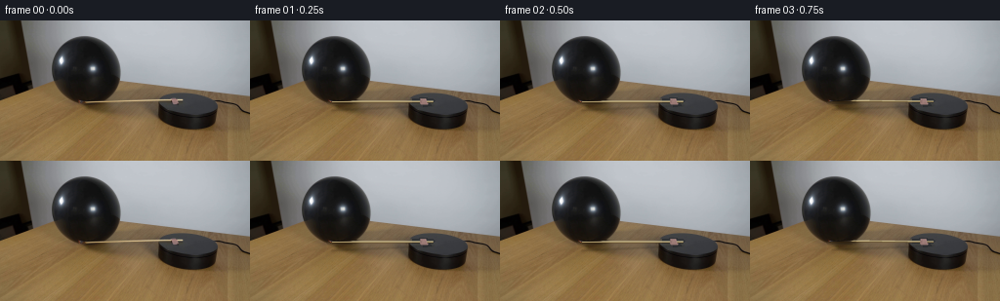
展开代码变化
--- 上一保存版本
+++ 本次保存版本
@@ -0,0 +1,189 @@
+from pathlib import Path
+import math
+import numpy as np
+from PIL import Image, ImageDraw, ImageFilter
+import cv2
+from scipy.ndimage import gaussian_filter
+from artifact_io import save
+
+ROOT=Path(__file__).resolve().parent
+SRC=np.array(Image.open(ROOT/'first_frame.png').convert('RGB'))
+H,W=144,256
+SS=4
+
+def poly_mask(points):
+ im=Image.new('L',(W*SS,H*SS))
+ ImageDraw.Draw(im).polygon([(int(x*SS),int(y*SS)) for x,y in points],fill=255)
+ return np.array(im.resize((W,H),Image.Resampling.LANCZOS))/255.
+
+# The silhouettes and all texture samples are taken from the supplied photograph.
+ball_points=[(52.6,47),(53.7,37),(58.1,27.8),(64.8,21.9),(75.6,17.1),(86.8,15.9),(97.1,17.3),(107.8,22.3),(115.6,30),(121.0,40),(123.4,49.8),(122.1,61.6),(117.3,72),(111,78.7),(103,82.8),(92,85.8),(81.5,85.2),(70.9,81.5),(63.6,75.4),(57.3,66.7),(53.9,57.3)]
+ballmask=poly_mask(ball_points)
+# remove the arm, the tiny mount, and their previous shadows, retaining the disk
+arm_mask=np.zeros((H,W),np.uint8)
+cv2.line(arm_mask,(80,84),(187,82),255,4)
+cv2.fillPoly(arm_mask,[np.array([(173,79),(181,78),(185,87),(177,88)],np.int32)],255)
+clean=cv2.inpaint(SRC,arm_mask,5,cv2.INPAINT_TELEA)
+# Correct the featureless turntable top after inpainting the mounting clip.
+for y in range(79,89):
+ for x in range(166,190):
+ if arm_mask[y,x]:
+ clean[y,x]=[int(47+(x-170)*.14),int(49+(x-170)*.14),int(52+(x-170)*.13)]
+
+# Fit the wall illumination to visible pixels on either side of the balloon.
+yy,xx=np.mgrid[:H,:W].astype(float)
+wall_left=21+yy*.19
+edge=np.where(xx<88,78-xx*.22,58.7+(xx-88)*.105)
+visible=(yy<edge-2)&(xx>wall_left+3)&(ballmask<.005)&(yy<76)
+u=(xx-128)/128;v=(yy-40)/50
+basis=[np.ones_like(u),u,v,u*u,u*v,v*v,u*u*u,u*u*v,u*v*v,v*v*v]
+A=np.stack(basis,axis=-1)
+wall=np.empty_like(SRC,dtype=float)
+for c in range(3):
+ coef=np.linalg.lstsq(A[visible],SRC[...,c][visible],rcond=None)[0]
+ for _ in range(3):
+ residual=SRC[...,c][visible]-A[visible]@coef
+ weight=1/(1+(residual/5)**2)
+ coef=np.linalg.lstsq(A[visible]*weight[:,None],SRC[...,c][visible]*weight,rcond=None)[0]
+ wall[...,c]=A@coef
+# sampled fine-grained noise, not synthetic new objects
+rng=np.random.default_rng(402)
+noise=gaussian_filter(rng.normal(0,.65,(H,W)),.45)
+wall+=noise[...,None]
+# tabletop wood is a perspective-aligned clone of unobstructed wood in the same frame
+mapx=(xx+12).astype(np.float32)
+mapy=(yy+37).astype(np.float32)
+wood=cv2.remap(SRC,mapx,mapy,cv2.INTER_CUBIC,borderMode=cv2.BORDER_REFLECT_101).astype(float)
+# match the overall falloff towards the rear of the tabletop
+wood*=np.clip(.91+(yy-70)*.0025,.84,1)[...,None]
+blend=np.clip((yy-edge+.5)/1.25,0,1)
+background=wall*(1-blend[...,None])+wood*blend[...,None]
+# Ball and its contact shadow disappear on rupture.
+replace=cv2.dilate((ballmask>.03).astype(np.uint8),np.ones((3,3),np.uint8)).astype(float)
+shadow=poly_mask([(59,78),(88,76),(123,80),(139,87),(133,96),(111,102),(86,98),(66,88)])
+shadow=gaussian_filter(shadow,3)
+replace=np.maximum(replace,shadow*.94)
+replace=gaussian_filter(replace,.55)
+base=clean.astype(float)*(1-replace[...,None])+background*replace[...,None]
+base=np.clip(base,0,255).astype(np.uint8)
+# Restore static turntable pixels; no moving surface on the cylinder wall.
+disk=poly_mask([(162,83),(167,78),(179,74),(195,74),(211,77),(220,82),(223,89),(220,102),(211,109),(192,112),(173,109),(162,102)])
+base=base*(1-disk[...,None])+clean*disk[...,None]
+base=np.uint8(np.clip(base,0,255))
+Image.fromarray(base).save(ROOT/'.tmp/background.png')
+Image.fromarray(clean).save(ROOT/'.tmp/clean.png')
+
+# Supersampled drawing utilities.
+def layer(): return Image.new('RGBA',(W*SS,H*SS),(0,0,0,0))
+def line(draw,points,fill,width):
+ draw.line([(round(x*SS),round(y*SS)) for x,y in points],fill=fill,width=max(1,round(width*SS)),joint='curve')
+def polygon(draw,points,fill):
+ draw.polygon([(round(x*SS),round(y*SS)) for x,y in points],fill=fill)
+def ellipse(draw,box,fill):
+ draw.ellipse(tuple(round(z*SS) for z in box),fill=fill)
+def overlay(im,lay):
+ small=lay.resize((W,H),Image.Resampling.LANCZOS)
+ return Image.alpha_composite(im.convert('RGBA'),small).convert('RGB')
+
+def arm_coords(theta):
+ # Ground-plane clockwise rotation projected through the locked camera.
+ c,s=math.cos(theta),math.sin(theta)
+ def p(x,y):
+ return (190.1+x*c-y*s,85.7+.42*(x*s+y*c))
+ return p
+
+def draw_arm(im,theta,i):
+ p=arm_coords(theta)
+ # cast soft shadows on the wooden table and top disk
+ sh=layer();d=ImageDraw.Draw(sh)
+ a=p(-107.6,-6.0);b=p(-2.6,-6.0)
+ line(d,[(a[0]+1,a[1]+9),(b[0]+1,b[1]+4)],(24,19,11,72),1.3)
+ sh=sh.filter(ImageFilter.GaussianBlur(SS*.8))
+ im=overlay(im,sh)
+ lay=layer();d=ImageDraw.Draw(lay)
+ # worn wood bottom edge, creamy upper reflection
+ line(d,[a,b],(108,86,48,255),1.8)
+ line(d,[(a[0],a[1]-.35),(b[0],b[1]-.35)],(205,192,146,255),1.1)
+ line(d,[(a[0]+.3,a[1]-.7),(b[0],b[1]-.7)],(224,212,171,210),.36)
+ # the pink clay patch is carried by the disk, rather than sliding along the arm
+ patch=[p(-15.8,-12.3),p(-10.2,-12.2),p(-9.2,-3),p(-7.7,-2),p(-8.1,1.5),p(-14.3,2.1),p(-16.1,-1)]
+ polygon(d,patch,(144,113,109,255))
+ line(d,[patch[0],patch[1],patch[2]],(182,145,139,240),.65)
+ polygon(d,[p(-13.8,-10),p(-10.6,-10),p(-10,-3),p(-14,-2)],(159,126,121,255))
+ # darkening of match head while burning
+ ellipse(d,(a[0]-1.0,a[1]-1.2,a[0]+1.2,a[1]+1.15),(58,39,24,255))
+ ellipse(d,(a[0]-.7,a[1]-.85,a[0]+.55,a[1]+.4),(154 if i<7 else 94,64,33,255))
+ im=overlay(im,lay)
+ # small living flame, always upright despite the rotating support
+ if i>0:
+ t=i/4
+ fh=3.5+.5*math.sin(i*2.73)+(.7 if i==4 else 0)
+ fx=a[0]+.25;fy=a[1]-.55
+ fire=layer();fd=ImageDraw.Draw(fire)
+ sway=.6*math.sin(i*1.93)
+ polygon(fd,[(fx-1.1,fy),(fx-1,fy-1.5),(fx+sway,fy-fh),(fx+.85,fy-1.6),(fx+1.0,fy)],(244,139,29,240))
+ polygon(fd,[(fx-.65,fy),(fx-.4,fy-1.5),(fx+sway*.6,fy-fh*.72),(fx+.45,fy-1.6),(fx+.7,fy)],(255,218,94,255))
+ polygon(fd,[(fx-.35,fy),(fx+.02,fy-2),(fx+.4,fy)],(255,245,194,255))
+ im=overlay(im,fire)
+ return im,a
+
+
+def draw_latex(im,i):
+ lay=layer();d=ImageDraw.Draw(lay)
+ # Rapid elastic recoil is over before the next quarter-second sample.
+ # The remaining curled sheet then falls the last centimeters to the table.
+ if i==5:
+ body=[(76,79),(81,74),(88,76),(89,80),(96,79),(101,84),(98,88),(104,89),(97,92),(91,90),(85,92),(80,88),(74,89),(76,84),(72,81)]
+ elif i==6:
+ body=[(76,86),(80,81),(88,82),(89,86),(96,84),(102,87),(103,90),(99,93),(93,94),(87,92),(82,94),(77,91),(74,90)]
+ else:
+ body=[(76,89),(80,86),(86,85),(90,88),(96,86),(101,88),(104,91),(100,94),(95,95),(89,93),(83,94),(78,92),(74,92)]
+ sh=layer();sd=ImageDraw.Draw(sh)
+ ellipse(sd,(73,89,107,99),(33,25,15,115))
+ sh=sh.filter(ImageFilter.GaussianBlur(1.5*SS)); im=overlay(im,sh)
+ polygon(d,body,(22,20,18,255))
+ dy=-8 if i==5 else -3 if i==6 else 0
+ polygon(d,[(77,90+dy),(80,86+dy),(87,85+dy),(89,89+dy),(84,90+dy),(83,93+dy)],(38,37,34,255))
+ polygon(d,[(87,89+dy),(91,88+dy),(96,86+dy),(98,88+dy),(95,91+dy),(89,92+dy)],(44,43,39,255))
+ polygon(d,[(96,91+dy),(100,88+dy),(103,91+dy),(99,94+dy),(94,94+dy)],(28,27,24,255))
+ line(d,[(77,90+dy),(80,86.4+dy),(85,85.8+dy),(88,89+dy)],(66,64,58,220),.55)
+ line(d,[(88,89.3+dy),(95.4,87+dy),(96.6,88+dy)],(86,82,72,180),.48)
+ line(d,[(84,90+dy),(89,91.5+dy),(94,90.6+dy)],(11,11,10,255),.75)
+ line(d,[(98,91+dy),(101,91.5+dy),(100,93+dy)],(55,53,47,210),.45)
+ # tied neck and a small snapped rubber tip
+ polygon(d,[(76,90+dy),(72.5,90+dy),(72,91.1+dy),(77,92+dy),(78,91+dy)],(40,30,20,255))
+ if i==5:
+ polygon(d,[(66,66),(69,67),(67,71),(65,70),(66,68)],(24,23,22,230))
+ line(d,[(67,66),(70,64.5)],(62,61,57,150),.5)
+ elif i==6:
+ polygon(d,[(64,81),(68,82),(67,84),(63,83)],(26,24,20,255))
+ else:
+ polygon(d,[(63,88),(65,87),(69,89),(67,90),(63,89.5)],(30,27,21,255))
+ return overlay(im,lay)
+
+frames=[]
+for i in range(20):
+ if i==0:
+ frames.append(SRC.copy());continue
+ if i<=4:
+ im=Image.fromarray(clean)
+ else:
+ im=Image.fromarray(base)
+ im=draw_latex(im,i)
+ # starts gently; contact is at the underside of the stretched balloon
+ if i<=2: degrees=0
+ elif i==3: degrees=1.3
+ elif i==4: degrees=3.0
+ else: degrees=3+(i-4)*21.0
+ im,head=draw_arm(im,math.radians(degrees),i)
+ # The rubber itself blocks the far part of the match up to the rupture.
+ if i<=4:
+ arr=np.array(im).astype(float)
+ bm=ballmask.copy()
+ # keep the bottom exposed burning head visible, but maintain original sphere shading
+ bm[83:]=0
+ arr=arr*(1-bm[...,None])+SRC*bm[...,None]
+ im=Image.fromarray(np.uint8(np.clip(arr,0,255)))
+ frames.append(np.array(im))
+frames=np.stack(frames).astype(np.uint8)
+save(frames,ROOT)
候选 02播放与检查图
点击播放 · 原生 RGB 像素

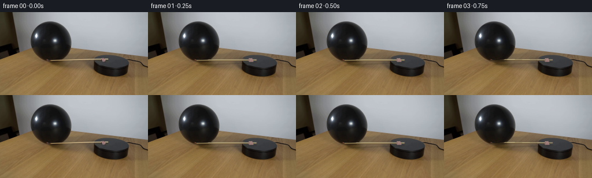
展开代码变化
--- 上一保存版本 +++ 本次保存版本 @@ -24,16 +24,21 @@ cv2.line(arm_mask,(80,84),(187,82),255,4) cv2.fillPoly(arm_mask,[np.array([(173,79),(181,78),(185,87),(177,88)],np.int32)],255) clean=cv2.inpaint(SRC,arm_mask,5,cv2.INPAINT_TELEA) -# Correct the featureless turntable top after inpainting the mounting clip. -for y in range(79,89): - for x in range(166,190): - if arm_mask[y,x]: - clean[y,x]=[int(47+(x-170)*.14),int(49+(x-170)*.14),int(52+(x-170)*.13)] +# Restore the smooth charcoal top using its untouched shading. +y0,x0=np.mgrid[:H,:W].astype(float) +dtop=((x0-192)/29)**2+((y0-86)/11.7)**2<.90 +uv=np.stack([np.ones_like(x0),(x0-190)/30,(y0-85)/12,((x0-190)/30)**2,((y0-85)/12)**2,(x0-190)*(y0-85)/360],axis=-1) +valid=dtop&(arm_mask==0)&(y0>75) +for c in range(3): + co=np.linalg.lstsq(uv[valid],SRC[...,c][valid],rcond=None)[0] + val=uv@co + repair=(arm_mask>0)&dtop + clean[...,c][repair]=np.clip(val[repair],0,255) # Fit the wall illumination to visible pixels on either side of the balloon. yy,xx=np.mgrid[:H,:W].astype(float) wall_left=21+yy*.19 -edge=np.where(xx<88,78-xx*.22,58.7+(xx-88)*.105) +edge=np.maximum(83.0-.39*xx,48.6+.110*xx) visible=(yy<edge-2)&(xx>wall_left+3)&(ballmask<.005)&(yy<76) u=(xx-128)/128;v=(yy-40)/50 basis=[np.ones_like(u),u,v,u*u,u*v,v*v,u*u*u,u*u*v,u*v*v,v*v*v] @@ -58,14 +63,15 @@ wood*=np.clip(.91+(yy-70)*.0025,.84,1)[...,None] blend=np.clip((yy-edge+.5)/1.25,0,1) background=wall*(1-blend[...,None])+wood*blend[...,None] -# Ball and its contact shadow disappear on rupture. -replace=cv2.dilate((ballmask>.03).astype(np.uint8),np.ones((3,3),np.uint8)).astype(float) -shadow=poly_mask([(59,78),(88,76),(123,80),(139,87),(133,96),(111,102),(86,98),(66,88)]) -shadow=gaussian_filter(shadow,3) -replace=np.maximum(replace,shadow*.94) -replace=gaussian_filter(replace,.55) -base=clean.astype(float)*(1-replace[...,None])+background*replace[...,None] -base=np.clip(base,0,255).astype(np.uint8) +# Seamless reconstruction matches both the wall's low-frequency lighting and +# the slanting wood grain at the boundary of the removed silhouette. +shadow=poly_mask([(59,78),(88,76),(123,80),(139,87),(133,98),(111,104),(86,100),(66,88)]) +replace=cv2.dilate((ballmask>.02).astype(np.uint8),np.ones((15,15),np.uint8)) +replace=np.maximum(replace,(shadow>.06).astype(np.uint8)) +mask=replace*255 +ys,xs=np.where(mask>0) +center=(int((xs.min()+xs.max())/2),int((ys.min()+ys.max())/2)) +base=cv2.seamlessClone(np.uint8(np.clip(background,0,255)),clean,mask,center,cv2.NORMAL_CLONE) # Restore static turntable pixels; no moving surface on the cylinder wall. disk=poly_mask([(162,83),(167,78),(179,74),(195,74),(211,77),(220,82),(223,89),(220,102),(211,109),(192,112),(173,109),(162,102)]) base=base*(1-disk[...,None])+clean*disk[...,None]
候选 03播放与检查图
点击播放 · 原生 RGB 像素
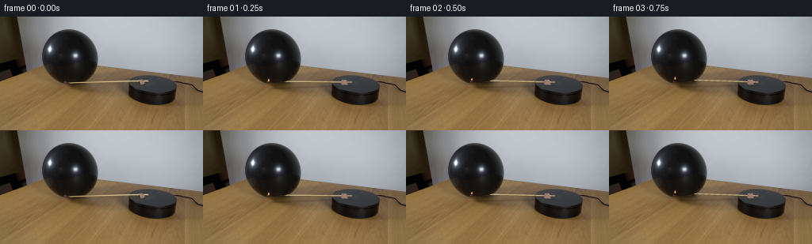
展开代码变化
--- 上一保存版本 +++ 本次保存版本 @@ -177,10 +177,8 @@ im=Image.fromarray(base) im=draw_latex(im,i) # starts gently; contact is at the underside of the stretched balloon - if i<=2: degrees=0 - elif i==3: degrees=1.3 - elif i==4: degrees=3.0 - else: degrees=3+(i-4)*21.0 + if i<=4: degrees=i*1.5 + else: degrees=6+(i-4)*21.0 im,head=draw_arm(im,math.radians(degrees),i) # The rubber itself blocks the far part of the match up to the rupture. if i<=4: @@ -190,6 +188,14 @@ bm[83:]=0 arr=arr*(1-bm[...,None])+SRC*bm[...,None] im=Image.fromarray(np.uint8(np.clip(arr,0,255))) + # The visible orange tongue laps against the near lower surface at contact. + flame=layer();fd=ImageDraw.Draw(flame) + fx,fy=head;fy-=.7 + fh=2.8+.45*math.sin(i*2.4) + polygon(fd,[(fx-.9,fy+.3),(fx-1,fy-1),(fx+.3*math.sin(i),fy-fh),(fx+.9,fy-.8),(fx+.8,fy+.3)],(237,132,35,230)) + polygon(fd,[(fx-.5,fy),(fx+.1,fy-fh*.75),(fx+.55,fy)],(255,220,114,255)) + ellipse(fd,(fx-.4,fy-.1,fx+.4,fy+.5),(255,237,167,255)) + im=overlay(im,flame) frames.append(np.array(im)) frames=np.stack(frames).astype(np.uint8) save(frames,ROOT)
可观测工具轨迹
实际执行的命令与返回图片。
命令 1exit 0
/bin/bash -lc "ls -la && cat prompt.txt && printf '\\n---RULES---\\n' && cat GENERATION_RULES.md"
命令 2exit 0
/bin/bash -lc "cat artifact_io.py && python - <<'PY'
from PIL import Image
im=Image.open('first_frame.png');print(im.size)
im.resize((1024,576)).save('.tmp/first_big.png')
PY"命令 3exit 0
/bin/bash -lc "python - <<'PY'
import numpy as np
from PIL import Image
im=np.array(Image.open('first_frame.png'))
for y in [10,20,35,50,60,65,70,80,90,100]:
print(y, [(x,im[y,x].tolist()) for x in [35,45,50,60,80,100,125,135,150]])
try: import cv2; print('cv2',cv2.__version__)
except:pass
try: import scipy; print('scipy',scipy.__version__)
except:pass
PY"命令 4exit 0
/bin/bash -lc "cat > generate.py <<'PY'
from pathlib import Path
import math
import numpy as np
from PIL import Image, ImageDraw, ImageFilter
import cv2
from scipy.ndimage import gaussian_filter
from artifact_io import save
ROOT=Path(__file__).resolve().parent
SRC=np.array(Image.open(ROOT/'first_frame.png').convert('RGB'))
H,W=144,256
SS=4
def poly_mask(points):
im=Image.new('L',(W*SS,H*SS))
ImageDraw.Draw(im).polygon([(int(x*SS),int(y*SS)) for x,y in points],fill=255)
return np.array(im.resize((W,H),Image.Resampling.LANCZOS))/255.
# The silhouettes and all texture samples are taken from the supplied photograph.
ball_points=[(52.6,47),(53.7,37),(58.1,27.8),(64.8,21.9),(75.6,17.1),(86.8,15.9),(97.1,17.3),(107.8,22.3),(115.6,30),(121.0,40),(123.4,49.8),(122.1,61.6),(117.3,72),(111,78.7),(103,82.8),(92,85.8),(81.5,85.2),(70.9,81.5),(63.6,75.4),(57.3,66.7),(53.9,57.3)]
ballmask=poly_mask(ball_points)
# remove the arm, the tiny mount, and their previous shadows, retaining the disk
arm_mask=np.zeros((H,W),np.uint8)
cv2.line(arm_mask,(80,84),(187,82),255,4)
cv2.fillPoly(arm_mask,[np.array([(173,79),(181,78),(185,87),(177,88)],np.int32)],255)
clean=cv2.inpaint(SRC,arm_mask,5,cv2.INPAINT_TELEA)
# Correct the featureless turntable top after inpainting the mounting clip.
for y in range(79,89):
for x in range(166,190):
if arm_mask[y,x]:
clean[y,x]=[int(47+(x-170)*.14),int(49+(x-170)*.14),int(52+(x-170)*.13)]
# Fit the wall illumination to visible pixels on either side of the balloon.
yy,xx=np.mgrid[:H,:W].astype(float)
wall_left=21+yy*.19
edge=np.where(xx<88,78-xx*.22,58.7+(xx-88)*.105)
visible=(yy<edge-2)&(xx>wall_left+3)&(ballmask<.005)&(yy<76)
u=(xx-128)/128;v=(yy-40)/50
basis=[np.ones_like(u),u,v,u*u,u*v,v*v,u*u*u,u*u*v,u*v*v,v*v*v]
A=np.stack(basis,axis=-1)
wall=np.empty_like(SRC,dtype=float)
for c in range(3):
coef=np.linalg.lstsq(A[visible],SRC[...,c][visible],rcond=None)[0]
for _ in range(3):
residual=SRC[...,c][visible]-A[visible]@coef
weight=1/(1+(residual/5)**2)
coef=np.linalg.lstsq(A[visible]*weight[:,None],SRC[...,c][visible]*weight,rcond=None)[0]
wall[...,c]=A@coef
# sampled fine-grained noise, not synthetic new objects
rng=np.random.default_rng(402)
noise=gaussian_filter(rng.normal(0,.65,(H,W)),.45)
wall+=noise[...,None]
# tabletop wood is a perspective-aligned clone of unobstructed wood in the same frame
mapx=(xx+12).astype(np.float32)
mapy=(yy+37).astype(np.float32)
wood=cv2.remap(SRC,mapx,mapy,cv2.INTER_CUBIC,borderMode=cv2.BORDER_REFLECT_101).astype(float)
# match the overall falloff towards the rear of the tabletop
wood*=np.clip(.91+(yy-70)*.0025,.84,1)[...,None]
blend=np.clip((yy-edge+.5)/1.25,0,1)
background=wall*(1-blend[...,None])+wood*blend[...,None]
# Ball and its contact shadow disappear on rupture.
replace=cv2.dilate((ballmask>.03).astype(np.uint8),np.ones((3,3),np.uint8)).astype(float)
shadow=poly_mask([(59,78),(88,76),(123,80),(139,87),(133,96),(111,102),(86,98),(66,88)])
shadow=gaussian_filter(shadow,3)
replace=np.maximum(replace,shadow*.94)
replace=gaussian_filter(replace,.55)
base=clean.astype(float)*(1-replace[...,None])+background*replace[...,None]
base=np.clip(base,0,255).astype(np.uint8)
# Restore static turntable pixels; no moving surface on the cylinder wall.
disk=poly_mask([(162,83),(167,78),(179,74),(195,74),(211,77),(220,82),(223,89),(220,102),(211,109),(192,112),(173,109),(162,102)])
base=base*(1-disk[...,None])+clean*disk[...,None]
base=np.uint8(np.clip(base,0,255))
Image.fromarray(base).save(ROOT/'.tmp/background.png')
Image.fromarray(clean).save(ROOT/'.tmp/clean.png')
# Supersampled drawing utilities.
def layer(): return Image.new('RGBA',(W*SS,H*SS),(0,0,0,0))
def line(draw,points,fill,width):
draw.line([(round(x*SS),round(y*SS)) for x,y in points],fill=fill,width=max(1,round(width*SS)),joint='curve')
def polygon(draw,points,fill):
draw.polygon([(round(x*SS),round(y*SS)) for x,y in points],fill=fill)
def ellipse(draw,box,fill):
draw.ellipse(tuple(round(z*SS) for z in box),fill=fill)
def overlay(im,lay):
small=lay.resize((W,H),Image.Resampling.LANCZOS)
return Image.alpha_composite(im.convert('RGBA'),small).convert('RGB')
def arm_coords(theta):
# Ground-plane clockwise rotation projected through the locked camera.
c,s=math.cos(theta),math.sin(theta)
def p(x,y):
return (190.1+x*c-y*s,85.7+.42*(x*s+y*c))
return p
def draw_arm(im,theta,i):
p=arm_coords(theta)
# cast soft shadows on the wooden table and top disk
sh=layer();d=ImageDraw.Draw(sh)
a=p(-107.6,-6.0);b=p(-2.6,-6.0)
line(d,[(a[0]+1,a[1]+9),(b[0]+1,b[1]+4)],(24,19,11,72),1.3)
sh=sh.filter(ImageFilter.GaussianBlur(SS*.8))
im=overlay(im,sh)
lay=layer();d=ImageDraw.Draw(lay)
# worn wood bottom edge, creamy upper reflection
line(d,[a,b],(108,86,48,255),1.8)
line(d,[(a[0],a[1]-.35),(b[0],b[1]-.35)],(205,192,146,255),1.1)
line(d,[(a[0]+.3,a[1]-.7),(b[0],b[1]-.7)],(224,212,171,210),.36)
# the pink clay patch is carried by the disk, rather than sliding along the arm
patch=[p(-15.8,-12.3),p(-10.2,-12.2),p(-9.2,-3),p(-7.7,-2),p(-8.1,1.5),p(-14.3,2.1),p(-16.1,-1)]
polygon(d,patch,(144,113,109,255))
line(d,[patch[0],patch[1],patch[2]],(182,145,139,240),.65)
polygon(d,[p(-13.8,-10),p(-10.6,-10),p(-10,-3),p(-14,-2)],(159,126,121,255))
# darkening of match head while burning
ellipse(d,(a[0]-1.0,a[1]-1.2,a[0]+1.2,a[1]+1.15),(58,39,24,255))
ellipse(d,(a[0]-.7,a[1]-.85,a[0]+.55,a[1]+.4),(154 if i<7 else 94,64,33,255))
im=overlay(im,lay)
# small living flame, always upright despite the rotating support
if i>0:
t=i/4
fh=3.5+.5*math.sin(i*2.73)+(.7 if i==4 else 0)
fx=a[0]+.25;fy=a[1]-.55
fire=layer();fd=ImageDraw.Draw(fire)
sway=.6*math.sin(i*1.93)
polygon(fd,[(fx-1.1,fy),(fx-1,fy-1.5),(fx+sway,fy-fh),(fx+.85,fy-1.6),(fx+1.0,fy)],(244,139,29,240))
polygon(fd,[(fx-.65,fy),(fx-.4,fy-1.5),(fx+sway*.6,fy-fh*.72),(fx+.45,fy-1.6),(fx+.7,fy)],(255,218,94,255))
polygon(fd,[(fx-.35,fy),(fx+.02,fy-2),(fx+.4,fy)],(255,245,194,255))
im=overlay(im,fire)
return im,a
def draw_latex(im,i):
lay=layer();d=ImageDraw.Draw(lay)
# Rapid elastic recoil is over before the next quarter-second sample.
# The remaining curled sheet then falls the last centimeters to the table.
if i==5:
body=[(76,79),(81,74),(88,76),(89,80),(96,79),(101,84),(98,88),(104,89),(97,92),(91,90),(85,92),(80,88),(74,89),(76,84),(72,81)]
elif i==6:
body=[(76,86),(80,81),(88,82),(89,86),(96,84),(102,87),(103,90),(99,93),(93,94),(87,92),(82,94),(77,91),(74,90)]
else:
body=[(76,89),(80,86),(86,85),(90,88),(96,86),(101,88),(104,91),(100,94),(95,95),(89,93),(83,94),(78,92),(74,92)]
sh=layer();sd=ImageDraw.Draw(sh)
ellipse(sd,(73,89,107,99),(33,25,15,115))
sh=sh.filter(ImageFilter.GaussianBlur(1.5*SS)); im=overlay(im,sh)
polygon(d,body,(22,20,18,255))
dy=-8 if i==5 else -3 if i==6 else 0
polygon(d,[(77,90+dy),(80,86+dy),(87,85+dy),(89,89+dy),(84,90+dy),(83,93+dy)],(38,37,34,255))
polygon(d,[(87,89+dy),(91,88+dy),(96,86+dy),(98,88+dy),(95,91+dy),(89,92+dy)],(44,43,39,255))
polygon(d,[(96,91+dy),(100,88+dy),(103,91+dy),(99,94+dy),(94,94+dy)],(28,27,24,255))
line(d,[(77,90+dy),(80,86.4+dy),(85,85.8+dy),(88,89+dy)],(66,64,58,220),.55)
line(d,[(88,89.3+dy),(95.4,87+dy),(96.6,88+dy)],(86,82,72,180),.48)
line(d,[(84,90+dy),(89,91.5+dy),(94,90.6+dy)],(11,11,10,255),.75)
line(d,[(98,91+dy),(101,91.5+dy),(100,93+dy)],(55,53,47,210),.45)
# tied neck and a small snapped rubber tip
polygon(d,[(76,90+dy),(72.5,90+dy),(72,91.1+dy),(77,92+dy),(78,91+dy)],(40,30,20,255))
if i==5:
polygon(d,[(66,66),(69,67),(67,71),(65,70),(66,68)],(24,23,22,230))
line(d,[(67,66),(70,64.5)],(62,61,57,150),.5)
elif i==6:
polygon(d,[(64,81),(68,82),(67,84),(63,83)],(26,24,20,255))
else:
polygon(d,[(63,88),(65,87),(69,89),(67,90),(63,89.5)],(30,27,21,255))
return overlay(im,lay)
frames=[]
for i in range(20):
if i==0:
frames.append(SRC.copy());continue
if i<=4:
im=Image.fromarray(clean)
else:
im=Image.fromarray(base)
im=draw_latex(im,i)
# starts gently; contact is at the underside of the stretched balloon
if i<=2: degrees=0
elif i==3: degrees=1.3
elif i==4: degrees=3.0
else: degrees=3+(i-4)*21.0
im,head=draw_arm(im,math.radians(degrees),i)
# The rubber itself blocks the far part of the match up to the rupture.
if i<=4:
arr=np.array(im).astype(float)
bm=ballmask.copy()
# keep the bottom exposed burning head visible, but maintain original sphere shading
bm[83:]=0
arr=arr*(1-bm[...,None])+SRC*bm[...,None]
im=Image.fromarray(np.uint8(np.clip(arr,0,255)))
frames.append(np.array(im))
frames=np.stack(frames).astype(np.uint8)
save(frames,ROOT)
PY
python generate.py"命令 5exit 0
/bin/bash -lc "python - <<'PY'
from PIL import Image
Image.open('.tmp/clean.png').resize((1024,576)).save('.tmp/clean_big.png')
Image.open('.tmp/background.png').resize((1024,576)).save('.tmp/bg_big.png')
PY"命令 6exit 0
/bin/bash -lc "python - <<'PY'
import numpy as np
from PIL import Image
im=np.array(Image.open('first_frame.png'))
for x in [32,35,40,45,50,52,125,130,135,140,150,155]:
print(x,[(y,im[y,x].tolist()) for y in range(59,71)])
print('disk')
for y in [77,80,83,86,89,92]: print(y,[(x,im[y,x].tolist()) for x in [168,175,180,185,190,195,205]])
PY"命令 7exit 0
/bin/bash -lc "python - <<'PY'
p='generate.py'
s=open(p).read()
a=s.index('# Correct the featureless turntable');b=s.index('# Fit the wall illumination')
s=s[:a]+'''# Restore the smooth charcoal top using its untouched shading.
y0,x0=np.mgrid[:H,:W].astype(float)
dtop=((x0-192)/29)**2+((y0-86)/11.7)**2<.90
uv=np.stack([np.ones_like(x0),(x0-190)/30,(y0-85)/12,((x0-190)/30)**2,((y0-85)/12)**2,(x0-190)*(y0-85)/360],axis=-1)
valid=dtop&(arm_mask==0)&(y0>75)
for c in range(3):
co=np.linalg.lstsq(uv[valid],SRC[...,c][valid],rcond=None)[0]
val=uv@co
repair=(arm_mask>0)&dtop
clean[...,c][repair]=np.clip(val[repair],0,255)
'''+s[b:]
s=s.replace('edge=np.where(xx<88,78-xx*.22,58.7+(xx-88)*.105)','edge=np.maximum(83.0-.39*xx,48.6+.110*xx)')
a=s.index('# Ball and its contact shadow');b=s.index('# Restore static turntable')
s=s[:a]+'''# Seamless reconstruction matches both the wall's low-frequency lighting and
# the slanting wood grain at the boundary of the removed silhouette.
shadow=poly_mask([(59,78),(88,76),(123,80),(139,87),(133,98),(111,104),(86,100),(66,88)])
replace=cv2.dilate((ballmask>.02).astype(np.uint8),np.ones((15,15),np.uint8))
replace=np.maximum(replace,(shadow>.06).astype(np.uint8))
mask=replace*255
ys,xs=np.where(mask>0)
center=(int((xs.min()+xs.max())/2),int((ys.min()+ys.max())/2))
base=cv2.seamlessClone(np.uint8(np.clip(background,0,255)),clean,mask,center,cv2.NORMAL_CLONE)
'''+s[b:]
open(p,'w').write(s)
PY
python generate.py
python - <<'PY'
from PIL import Image
Image.open('.tmp/background.png').resize((1024,576)).save('.tmp/bg_big.png')
PY"命令 8exit 0
/bin/bash -lc "which ffmpeg || true
python - <<'PY'
from PIL import Image
im=Image.open('frames/04.png');im.resize((1024,576)).save('.tmp/prepop.png')
im=Image.open('frames/08.png');im.resize((1024,576)).save('.tmp/postpop.png')
PY"命令 9exit 0
/bin/bash -lc "python - <<'PY'
p='generate.py';s=open(p).read();s=s.replace('if i<=2: degrees=0\\n elif i==3: degrees=1.3\\n elif i==4: degrees=3.0\\n else: degrees=3+(i-4)*21.0','if i<=4: degrees=i*1.5\\n else: degrees=6+(i-4)*21.0')
s=s.replace(\"im=Image.fromarray(np.uint8(np.clip(arr,0,255)))\\n frames.append\",'''im=Image.fromarray(np.uint8(np.clip(arr,0,255)))
# The visible orange tongue laps against the near lower surface at contact.
flame=layer();fd=ImageDraw.Draw(flame)
fx,fy=head;fy-=.7
fh=2.8+.45*math.sin(i*2.4)
polygon(fd,[(fx-.9,fy+.3),(fx-1,fy-1),(fx+.3*math.sin(i),fy-fh),(fx+.9,fy-.8),(fx+.8,fy+.3)],(237,132,35,230))
polygon(fd,[(fx-.5,fy),(fx+.1,fy-fh*.75),(fx+.55,fy)],(255,220,114,255))
ellipse(fd,(fx-.4,fy-.1,fx+.4,fy+.5),(255,237,167,255))
im=overlay(im,flame)
frames.append''')
open(p,'w').write(s)
PY
python generate.py
python - <<'PY'
import numpy as np
from PIL import Image
p=np.load('pixels.npz')['pixels']
f=np.array(Image.open('frames/00.png'))
s=np.array(Image.open('first_frame.png'))
assert np.array_equal(s,f)
assert p.shape==(144,256,20)
print('Verified: 20 RGB frames, 256x144; frame 00 pixel-identical.')
PY"视觉工具实际返回图片 1
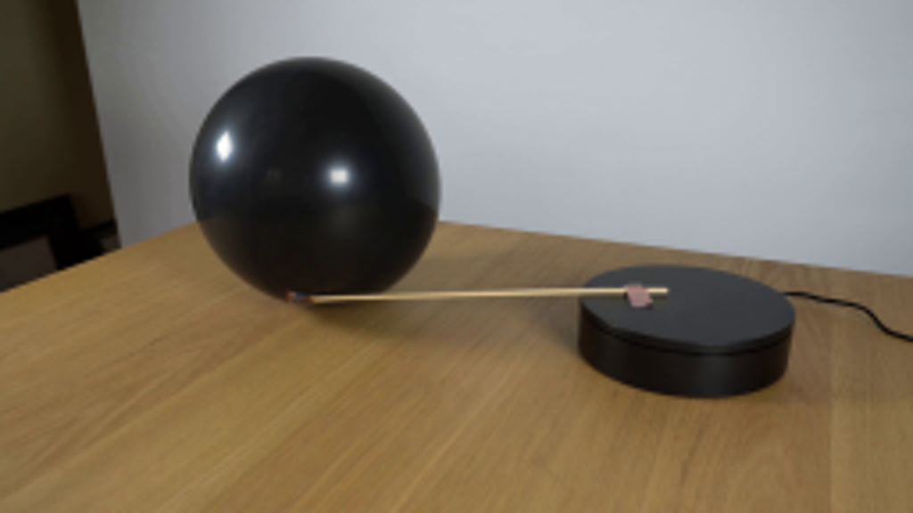
视觉工具实际返回图片 2

视觉工具实际返回图片 3
视觉工具实际返回图片 4
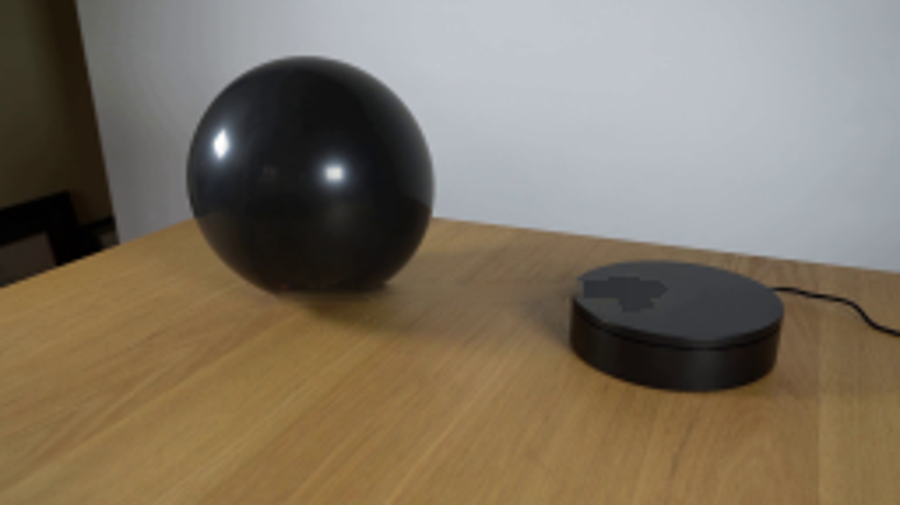
视觉工具实际返回图片 5
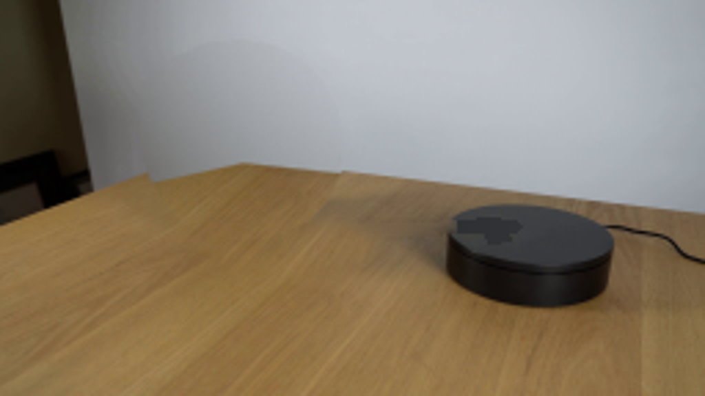
视觉工具实际返回图片 6
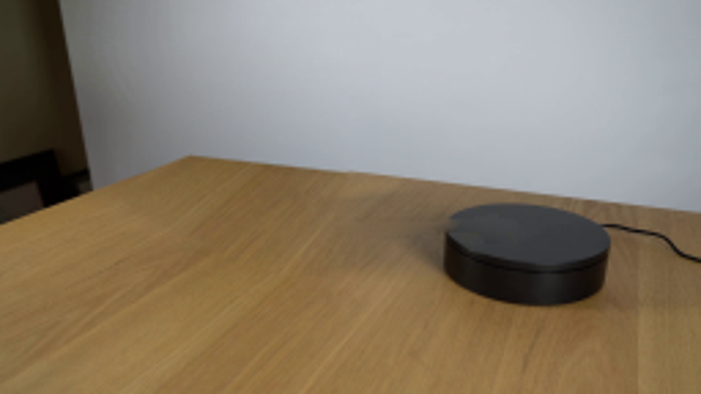
视觉工具实际返回图片 7
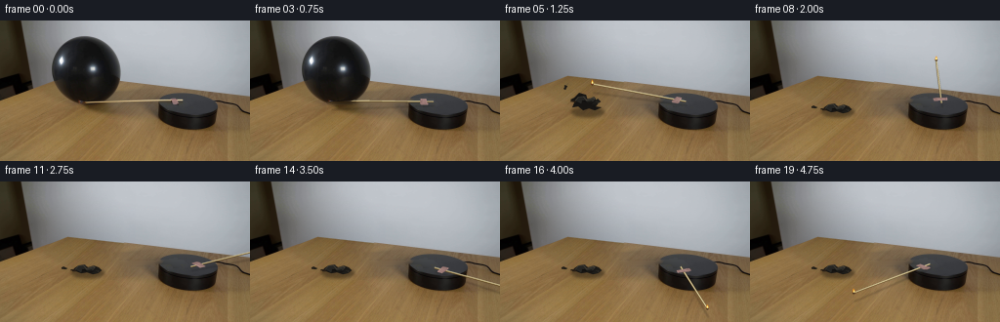
视觉工具实际返回图片 8
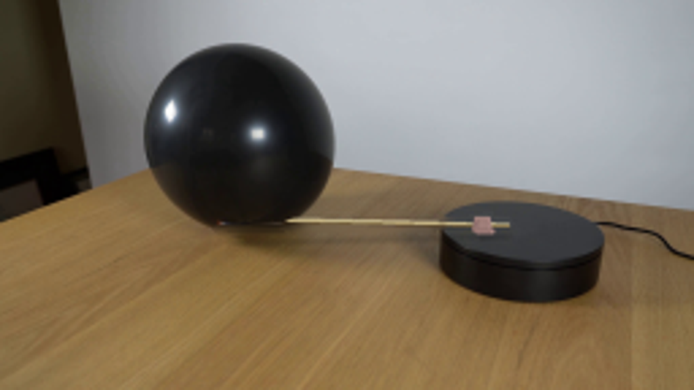
视觉工具实际返回图片 9
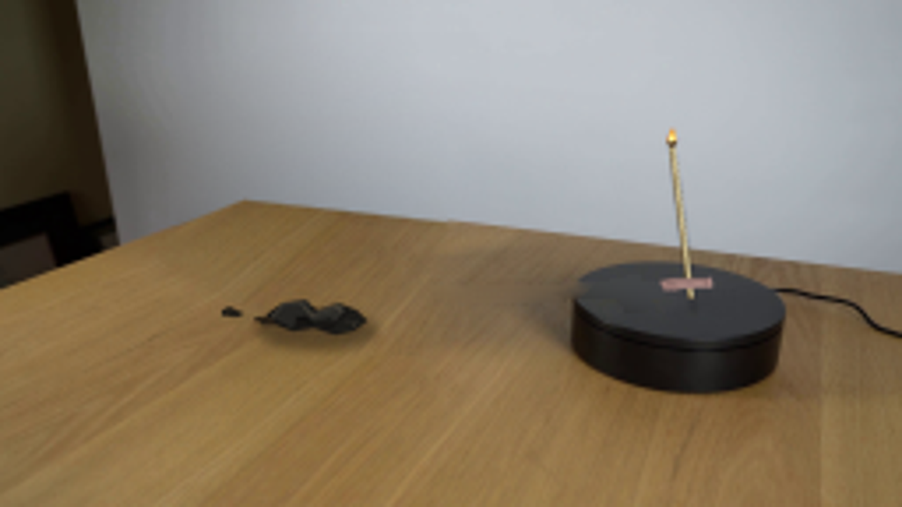
保存候选 3 份；完成命令 9 次；可验证图片返回 9 张。原始 API 响应与完整日志保留在本地。